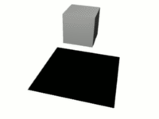
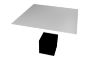
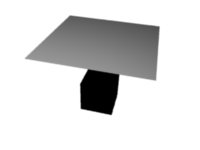
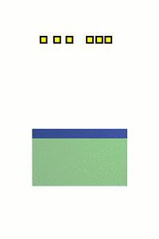

Collisions¶
There are two different collision types that you may use: collision between different objects and internal collision. We should set one thing straight from the start: the primary targets of the collision calculation are the vertices of a Soft Body. So if you have too few vertices too few collision takes place. Secondarily, you can use edges and faces to improve the collision calculation.
Collisions with other objects¶
For a Soft Body to collide with another object there are a few prerequisites:
- Both objects have to share a layer, but the layer does not necessarily have to be visible.
- The collision object has to be a mesh object.
- You have to activate the option Collision in the Collision panel of the 物理 tab for the collision object. The collision object may also be a Soft Body.
- If you use modifiers such as Array and Mirror you have to activate EV.M.Stack to ensure that collision calculation is based on the modified object. The sequence of 修改器 is not important.
例子s¶

A Soft Body cube colliding with a plane. |

A Soft Body plane colliding with a cube - no interaction at all. |

Collision with CFace activated. |
A cube colliding with a plane works pretty well Fig. A Soft Body cube colliding with a plane., but a plane falls right through a cube that it is supposed to collide with Fig. A Soft Body plane colliding with a cube - no interaction at all.. Why is that? Because the default method of calculation only checks to see if the four vertices of the plane collides with the cube as the plane is pulled down by gravity. You can activate CFace to enable collision between the face of the plane and the object instead Fig. Collision with CFace activated., but this type of calculation takes much longer.
Let us have a closer look at the collision calculation, so you can get an idea of how we might optimize it.
Calculating Collisions¶

Visualization of the collision of a Soft Body vertex with a plane. |

Six Soft Body vertices with different speed. |
Soft Body simulation is by default done on a per vertex basis. If the vertices of the Soft Body do not collide with the collision object there will be no interaction between the two objects.
In Fig. Visualization of the collision of a Soft Body vertex with a plane. you can see a vertex colliding with a plane. If a vertex penetrates the zone between Outer and Inner, it is repulsed by a force in the direction of the face normal. The position that a vertex finally ends up in is dependent on the forces that act upon it. In the example gravity and the repulsion force of the face balance out. The speed at which the vertex is pulled out of the collision zone is influenced by the Choke parameter Fig. Parameters for Soft Body calculation..
Now lets see what happens if we make vertices heavier and let them travel at a faster speed. In Fig. Six Soft Body vertices with different speed. you can see vertices traveling at different speeds. The two on the far right (5 and 6) are traveling so fast that they pass right through the collision zone (this is because of the default solver precision - which we can fix later). You will notice that the fourth vertex also travels quite fast and because it is heavier it breaches the inner zone. The first three vertices collide correctly.
Also Edges and Faces can be used for the collision calculation.
You can set up your collision so that edges and even faces are included in the collision calculation Fig. Also Edges and Faces can be used for the collision calculation.. The collision is then calculated differently. It is checked whether the edge or face intersects with the collision object, the collision zones are not used.
Good collisions¶
Parameters for Soft Body calculation.
If the collision you have set up is not behaving properly, you can try the following:
Tip
The best way
Add Loop Cuts to your Soft Body object in strategic areas that you know are most likely to be involved in a collision.
- The Soft Body object must have more subdivisions than the collision object.
- Check the direction of the face normals.
- If the collision object has sharp spikes they might penetrate the Soft Body.
- The resolution of the solver must match the speed at which Soft Body vertices are traveling. Lower the parameter Error Lim and carefully increase Min S.
- Outer and Inner should be large enough, but zones of opposite faces should not overlap, or you have forces in opposite directions.
- If you use strong forces you should use large zones.
- Set Choke to a high enough value (all the way up if necessary) if you have difficulties with repelled vertices.
- Colliding faces are difficult to control and need long calculation times. Try not to use them.
Often it is better to create a simplified mesh to use as your collision object, however, this may be difficult if you are using an animated mesh.
Self Collision¶
Self Collision is working only if you have activated Use Edges.
When enabled, allows you to control how Blender will prevent the Soft Body from intersecting with itself. Every vertex is surrounded with an elastic virtual ball. Vertices may not penetrate the balls of other vertices. If you want a good result you may have to adjust the size of these balls. Normally it works pretty well with the default options.
- Ball Size Calculation
- Man (“manual”)
- The Ball Size directly sets the ball size (in BU).
- Av (“average”)
- The average length of all edges attached to the vertex is calculated and then multiplied with the Ball Size setting. Works well with evenly distributed vertices.
- Min / Max
- The ball size is as large as the smallest/largest spring length of the vertex multiplied with the Ball Size.
- AvMiMax (“average min/max”)
- Size = ((Min + Max)/2) × Ball Size.
- Ball Size
Default 0.49 BU or fraction of the length of attached edges. The edge length is computed based on the algorithm you choose. You know how when someone stands too close to you, and feel uncomfortable? We call that our “personal space”, and this setting is the factor that is multiplied by the spring length. It is a spherical distance (radius) within which, if another vertex of the same mesh enters, the vertex starts to deflect in order to avoid a self-collision.
Set this value to the fractional distance between vertices that you want them to have their own “space”. Too high of a value will include too many vertices all the time and slow down the calculation. Too low of a level will let other vertices get too close and thus possibly intersect because there won’t be enough time to slow them down.
- Stiffness
- Default 1.0. How elastic that ball of personal space is.
- Damping
- Default 0.5. How the vertex reacts. A low value just slows down the vertex as it gets too close. A high value repulses it.
Collisions with other objects are set in the (other) Collision panel. To collide with another object they have to share at least one common layer.